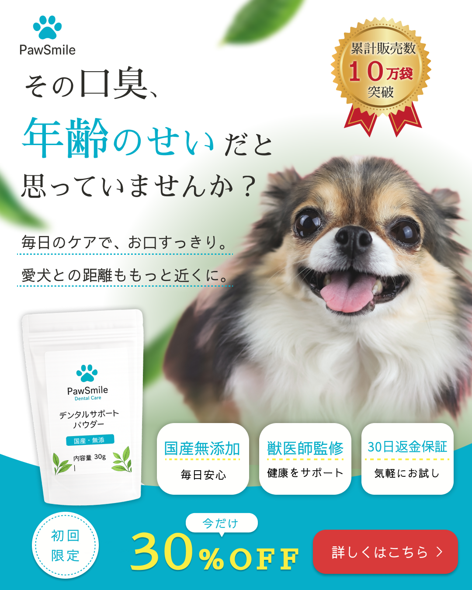

WORK

ペット用デンタルケア商品バナー
DESIGN
自主制作のペット用デンタルケア商品バナー
- 目的
- 広告からLPへの遷移を目的とし、愛犬の口臭に悩む飼い主へ商品の魅力を伝えることを意識して制作しました。
- ターゲット
- 愛犬の健康意識が高く、毎日のケアを大切にしている方
愛犬の口臭が気になっている方 - 工夫した点
- ペット用品はかわいらしさを重視したデザインが多い一方、
本商品は健康ケアをテーマとしているため、ナチュラルさと信頼感を両立できるよう、
余白を活かしたレイアウトとターコイズブルーを基調とした配色を採用しました。 - 制作期間
- 3日間
- 使用言語・ツール
- Figma